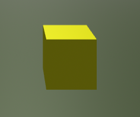

About the Project
Lost in Forest is a first-person 3D browser game built entirely with HTML, CSS, and JavaScript. The player is dropped into a misty, eerie forest and must survive by collecting glowing lanterns scattered across the environment. Standing in the way are hidden traps and a relentless black dog with glowing red eyes that hunts you down — draining your life on contact.
The challenge was creating a genuinely tense and atmospheric experience using only vanilla web technologies, without any game engine. Everything from the 3D trees and fog to the enemy AI and collision detection was coded from scratch.
Screenshots



💡 Save screenshots as images/forest-gameplay.png, images/forest-dog.png, and images/forest-lantern.png.
How to Play
- Explore the 3D forest and find all the glowing lanterns
- Collect each lantern to add it to your inventory and progress
- Avoid the black dog — it chases you and drains your life on contact
- Watch out for hidden traps scattered across the forest floor
- Keep an eye on your life bar — reach zero and it's game over
- Survive long enough to collect all the lanterns and escape
Game HUD
Inventory
Tracks the lanterns you have collected so far
Life Bar
Starts at 100 — reduced by the dog and traps
Journal
Narrative messages that guide your journey through the forest
Development Challenges
Building 3D without a game engine
Creating a convincing 3D forest environment in a browser using only JavaScript was the biggest challenge. Rendering trees, fog, and a ground plane — plus making the camera move in 3D space — required learning how perspective and depth work at a code level.
Enemy AI and collision
Making the dog chase the player involved writing a simple tracking algorithm that updates the dog's position each frame to move toward the player's coordinates. Collision detection for both the dog and the traps also had to be handled manually.
Atmosphere and tone
Getting the right eerie feeling — the grey fog, the dark low-poly trees, the glowing red eyes on the dog — was an intentional design choice to make the game feel genuinely unsettling despite its simple visual style.
What I Learned
This project pushed my JavaScript skills further than any previous project. I learned how to structure a real-time game loop, handle keyboard input for movement, manage game state (life, inventory, win/lose conditions), and create a 3D visual experience without any external libraries. It also taught me how much atmosphere can be built through simple design choices — colour, fog, and lighting go a long way even with low-poly shapes.